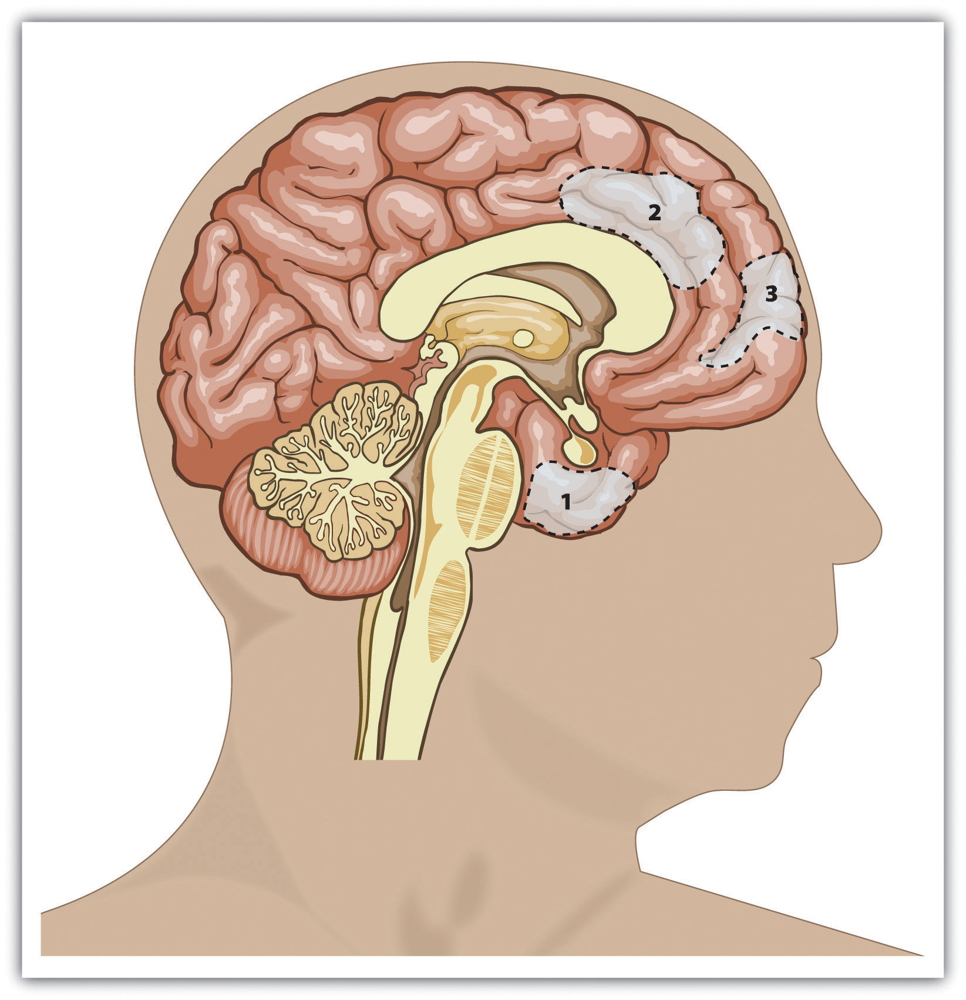
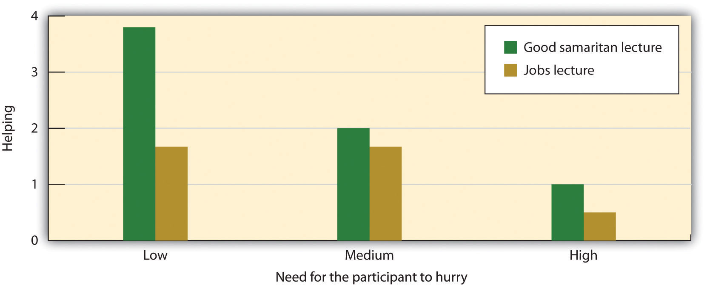
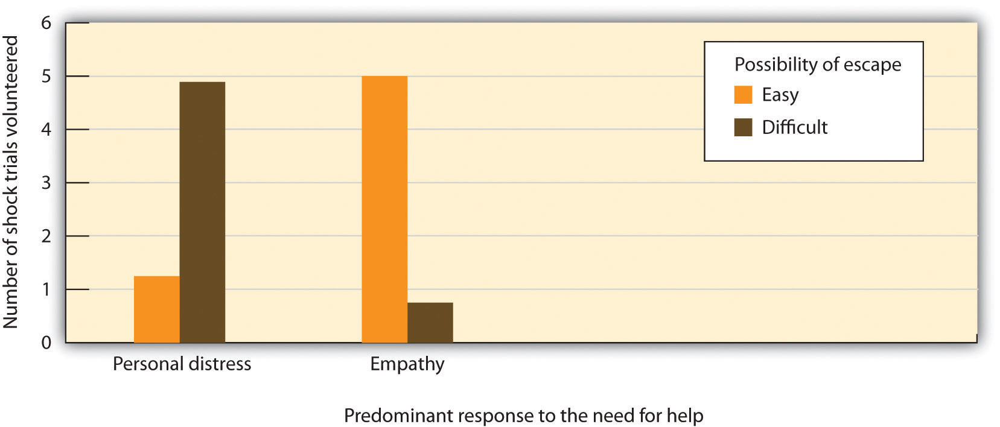
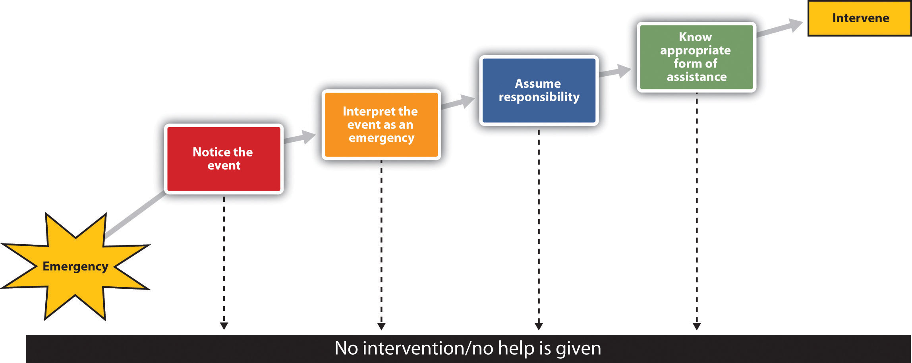
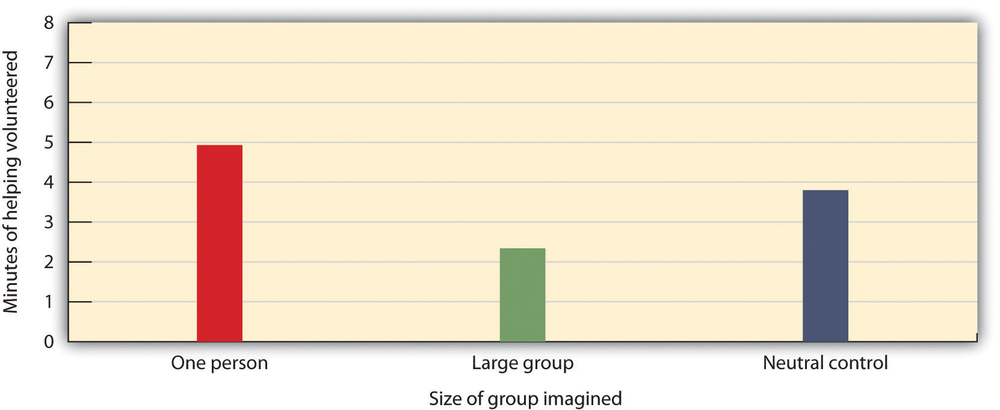
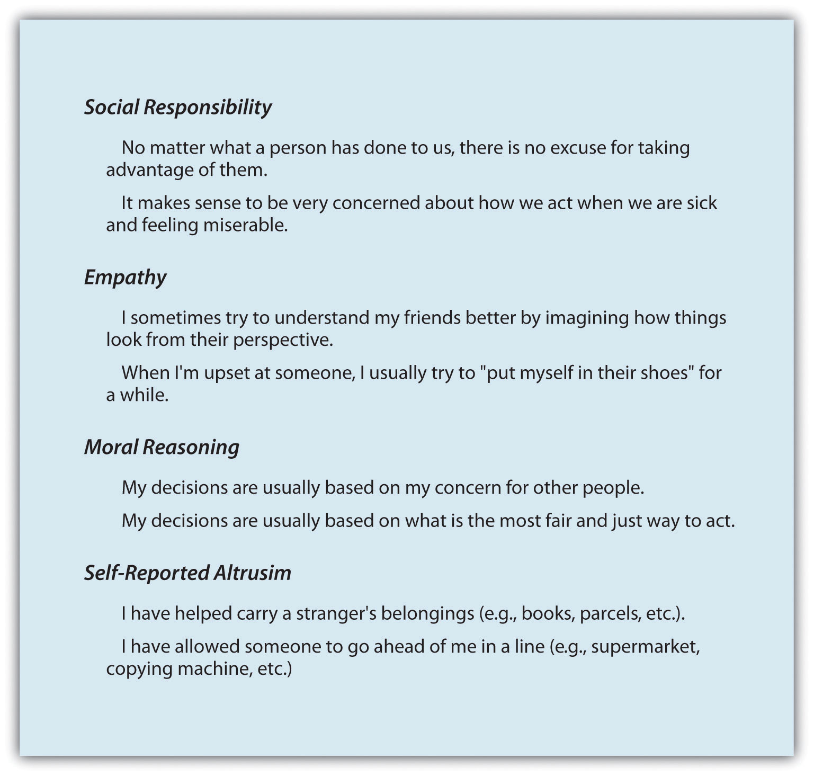
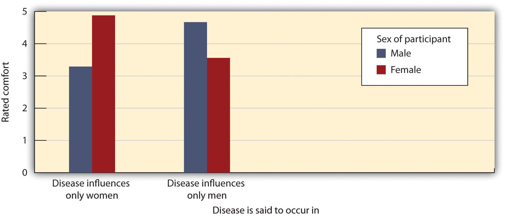
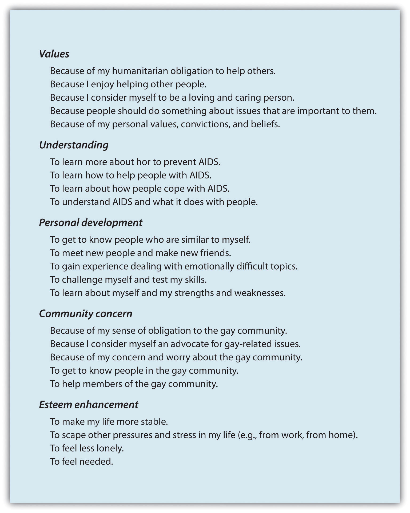

The film actor Brad Pitt has been personally involved in helping rebuild the city of New Orleans after it was devastated by Hurricane Katrina in 2005. As one who has always been interested in architecture, Pitt created a rebuilding project and donated $5 million of his own money to get it started. With the help of some architectural firms, he produced a wide variety of ecologically friendly homes and flood-proof designs. The website (http://www.makeitrightnola.org) asks businesses, religious groups, and individuals to provide grants and donations for house projects.
Pitt says the primary goal of his work is to replace homes, although many officials and politicians wonder whether it is a good idea to rebuild these houses in area that is likely to be flooded again.
To publicize his cause, Pitt had 150 huge pink Monopoly-shaped houses built around the Lower Ninth Ward. The pink blocks, which he described as a work of art, emphasize the needs of the ward and his ideas for redesign.
Pitt said at the time that rebuilding the Lower Ninth Ward was a bigger priority than his movie career, a project he was going to see through to the end.
I’m sure you remember when Hurricane Katrina hit the southern coast of the United States in the fall of 2005. The hurricane created billions of dollars in damage, destroyed a good part of the city of New Orleans and other Southern towns, and caused the dislocation of thousands of people from their homes. The hurricane made news across the world, and the disaster was not ignored. Hundreds of thousands of people made financial contributions to help rebuild the cities and repair the lives that were devastated by the storm. During the first few months after the storm, thousands more people came from across the country, and even from around the world, to help clean up the mess and repair the damage that the storm had caused. Many of these volunteers had been to New Orleans, and some had families and friends there. Others came simply because they had heard about the disaster and wanted to help the people who were so profoundly affected by it.
When you hear about this type of behavior, you may wonder about its meaning for human nature. Why would people sacrifice so much of themselves for others who cannot help them in return? Is helping part of the normal human experience, or are these acts unusual, unexpected, and rare? Who is most likely to help, who are we most likely to help, and under what social circumstances do we help or not help? And what biological, personal, social, and cultural factors influence helping?
On the other hand, perhaps you are skeptical about altruism. You may have noticed the many cases in which people seem oblivious to the needs of others. We allow tens of millions of people in our country to live in poverty, we do little to help fellow citizens who do not receive adequate health care, and often we seem to be more concerned with ourselves that we are with others. You might wonder whether people ever perform behaviors that are not designed—at least in some way—to benefit themselves. Perhaps at least some of the Katrina volunteers, and even Brad Pitt himself, were really helping—at least in part—for themselves. The money and time that they volunteered might have been motivated by the desire to avoid being seen as selfish, or by the fear of feeling guilty if they did not help. Perhaps our seemingly altruistic behaviors are actually motivated not by the desire to increase another’s welfare but by the desire to enhance the self.
Human nature has created a general tendency for people to enjoy the company of others and to trust, care for, and respect other people. This idea leads us to expect that we will, in most cases, be helpful and cooperative, and perhaps even altruistic. There is evidence to support this idea. According to a survey given by an established coalition that studies and encourages volunteering (http://www.independentsector.org), in the year 2001 over 83 million American adults reported that they helped others by volunteering and did so an average of 3.6 hours per week. The survey estimated that the value of the volunteer time that was given was over 239 billion dollars. It seems that many people are helpful to others. Indeed, although few of us are likely to have the opportunity to engage in an act of helpful heroism, we are all likely to have the opportunity to help somebody sometime, and it is likely that—if the costs are not too great—we will do so.
If you are thinking like a social psychologist, you will realize that whether we help or don’t help is not likely to be determined completely by random factors. Rather, these decisions are influenced by the underlying human motivations of protecting the self and reaching out to others. Some of our altruistic behavior is part of our genetic endowment—we help because we are human beings, and human beings (as are many other species) are helpful. In other cases our helping is more selfish, designed to make ourselves feel better or even to gain rewards such as praise, status, or money. Although we may not completely understand the characteristics of altruism and we cannot always predict who will or will not help others, social psychologists nevertheless have learned a great deal about these determinants.
Because we spend so much time in the presence of others, we have the opportunity to react to them in either positive or negative ways. To some people we are friendly, caring, and helpful; to others we are wary, unfriendly, or even mean and aggressive. The goal of Chapter 9 "Helping and Altruism" and Chapter 10 "Aggression" is to understand when and why people engage in either prosocial or antisocial behaviors. Let’s begin by focusing on the positive side of the equation—what makes us help others. Chapter 10 "Aggression" will discuss the flip side—the causes of human aggression.
AltruismBehavior that is designed to increase another person’s welfare, particularly if the behavior does not seem to provide a direct reward to the person who exhibits it. refers to any behavior that is designed to increase another person’s welfare, and particularly those actions that do not seem to provide a direct reward to the person who performs them (Batson, 2011; Dovidio, Piliavin, Schroeder, & Penner, 2006; Penner, Dovidio, Piliavin, & Schroeder, 2005).Batson, C. D. (2011). Altruism in humans. New York, NY: Oxford University Press; Dovidio, J. F., Piliavin, J. A., Schroeder, D. A., & Penner, L. (2006). The social psychology of prosocial behavior. Mahwah, NJ: Lawrence Erlbaum; Penner, L. A., Dovidio, J. F., Piliavin, J. A., & Schroeder, D. A. (2005). Prosocial behavior: Multilevel perspectives. Annual Review of Psychology, 56, 365–392. Altruism occurs when we go out of our way to help people who have lost their homes as a result of a natural disaster such as a hurricane, when we stop to help a stranger who has been stranded on the highway, when we volunteer at a homeless shelter or donate to a charity, or when we get involved to prevent a crime from occurring. Every day there are numerous acts of helping that occur all around us. As we will see, some of these represent true altruism, whereas other represent helping that is motivated more by self-concern. And of course, there are also times when we do not help at all, seeming to not care about the needs of others.
Figure 9.1
This figure shows the areas of the human brain that are known to be important in empathy and helping. They include the amygdala (area 1) and sections of the prefrontal cortex (areas 2 and 3). From Lieberman (2010).Lieberman, M. D. (2010). Social cognitive neuroscience. In S. T. Fiske, D. T. Gilbert, & G. Lindzey (Eds.), Handbook of social psychology (5th ed., Vol. 1, pp. 143–193). Hoboken, NJ: John Wiley & Sons.
.
Helping is strongly influenced by affective variables. Indeed, the parts of the brain that are most involved in empathy, altruism, and helping are the amygdala and the prefrontal cortex, areas that are responsible for emotion and emotion regulation (Figure 9.1).
Is the tendency to help others, at least in part, a basic feature of human nature? Evolutionary psychologists believe so. They argue that although helping others can be costly to us as individuals, altruism does have a clear benefit for the group as a whole. Remember that in an evolutionary sense the survival of the individual is less important than the survival of the individual’s genes (McAndrew, 2002).McAndrew, F. T. (2002). New evolutionary perspectives on altruism: Multilevel-selection and costly-signaling theories. Current Directions in Psychological Science, 11(2), 79–82. Therefore, if a given behavior such as altruism enhances our reproductive success by helping the species as a whole survive and prosper, then that behavior is likely to increase fitness, be passed on to subsequent generations, and become part of human nature.
If we are altruistic in part to help us pass on our genes, then we should be particularly likely try to care for and to help our relatives. Research has found that we are indeed particularly helpful to our kin (Madsen et al., 2007; Stewart-Williams, 2007).Madsen, E. A., Tunney, R. J., Fieldman, G., Plotkin, H. C., Dunbar, R. I. M., Richardson, J.-M., & McFarland, D. (2007). Kinship and altruism: A cross-cultural experimental study. British Journal of Psychology, 98(2), 339–359; Stewart-Williams, S. (2007). Altruism among kin vs. nonkin: Effects of cost of help and reciprocal exchange. Evolution and Human Behavior, 28(3), 193–198. Burnstein, Crandall, and Kitayama (1994)Burnstein, E., Crandall, C., & Kitayama, S. (1994). Some neo-Darwinian decision rules for altruism: Weighing cues for inclusive fitness as a function of the biological importance of the decision. Journal of Personality and Social Psychology, 67(5), 773–789. asked students in the United States and Japan to report how they would respond to a variety of situations in which someone needed help. The students indicated that in cases in which a person’s life was at stake and the helping involved a lot of effort, time, and danger, they would be more likely to help a person who was closely related to them (for instance, a sibling, parent, or child) than they would be to help a person who was more distantly related (for example, a niece, nephew, uncle, or grandmother). People are more likely to donate kidneys to relatives than to strangers (Borgida, Conner, & Manteufel, 1992),Borgida, E., Conner, C., & Manteufel, L. (Eds.). (1992). Understanding living kidney donation: A behavioral decision-making perspective. Thousand Oaks, CA: Sage. and even children indicate that they are more likely to help their siblings than they are to help a friend (Tisak & Tisak, 1996).Tisak, M. S., & Tisak, J. (1996). My sibling’s but not my friend’s keeper: Reasoning about responses to aggressive acts. Journal of Early Adolescence, 16(3), 324–339.
Table 9.1 "Percentage of Genetic Material Shared by the Members of Each Category" shows the average extent to which we share genes with some of the people we are genetically related to. According to evolutionary principles, this degree of genetic closeness should be positively correlated with the likelihood that we will help each of those people. Do you think that your own likelihood of helping each of the people listed corresponds to the degree to which you are genetically related to that person?
Table 9.1 Percentage of Genetic Material Shared by the Members of Each Category
| Identical monozygotic twins | 100% |
| Parents, children, siblings, and fraternal (dizygotic) twins | 50% |
| Half-sibling, grandparent, and grandchild | 25% |
| Cousins, great-grandchildren, great-grandparents, great-aunts, great-uncles | 12.5% |
| Unrelated persons, such as a marital partner, brother-in-law or sister-in-law, adopted or step-sibling, friend, or acquaintance | 0% |
| *Source: Neyer and Lang (2003).Neyer, F. J., & Lang, F. R. (2003). Blood is thicker than water: Kinship orientation across adulthood. Journal of Personality and Social Psychology, 84(2), 310–321. | |
|---|---|
Our reactions to others are influenced not only by our genetic relationship to them but also by their perceived similarity to us. We help friends more than we help strangers, we help members of our ingroups more than we help members of outgroups, and we help people who are more similar to us more generally (Dovidio et al., 1997; Krupp, DeBruine, & Barclay, 2008; Sturmer, Snyder, Kropp, & Siem, 2006).Dovidio, J. F., Gaertner, S. L., Validzic, A., Matoka, K., Johnson, B., & Frazier, S. (1997). Extending the benefits of recategorization: Evaluations, self-disclosure, and helping. Journal of Experimental Social Psychology, 33(4), 401–420; Krupp, D. B., Debruine, L. M., & Barclay, P. (2008). A cue of kinship promotes cooperation for the public good. Evolution and Human Behavior, 29(1), 49–55; Sturmer, S., Snyder, M., Kropp, A., & Siem, B. (2006). Empathy-motivated helping: The moderating role of group membership. Personality and Social Psychology Bulletin, 32(7), 943–956. It is quite possible that similarity is an important determinant of helping because we use it as a marker—although not a perfect one—that people share genes with us (Park & Schaller, 2005; Van Vugt & Van Lange, 2006).Park, J. H., & Schaller, M. (2005). Does attitude similarity serve as a heuristic cue for kinship? Evidence of an implicit cognitive association. Evolution and Human Behavior, 26(2), 158–170; Van Vugt, M., & Van Lange, P. A. M. (2006). Psychological adaptations for prosocial behavior: The altruism puzzle. In M. Schaller, J. Simpson, & D. Kenrick (Eds.), Evolution and social psychology (pp. 237–262). New York, NY: Psychology Press. Cialdini, Brown, Lewis, Luce, and Neuberg (1997)Cialdini, R. B., Brown, S. L., Lewis, B. P., Luce, C., & Neuberg, S. L. (1997). Reinterpreting the empathy-altruism relationship: When one into one equals oneness. Journal of Personality and Social Psychology, 73(3), 481–494. have proposed that it is the sense of perceived similarity—the sense of ‘‘oneness’’ between the helper and the individual in need—that motivates most helping.
Although it seems logical that we would help people we are related to or those we perceive as similar to us, why would we ever help people to whom we are not related? One explanation for such behavior is based on the principle of reciprocal altruism (Trivers, 1971).Trivers, R. L. (1971). The evolution of reciprocal altruism. Quarterly Review of Biology, 46, 35–57. Reciprocal altruismThe mutual, and generally equitable, exchange of benefits between people. is the idea that, if we help other people now, they will return the favor should we need their help in the future. By helping others, we both increase our chances of survival and reproductive success and help others increase their chances of survival too. Over the course of evolution, those who engage in reciprocal altruism should be able to reproduce more often than those who do not, thus enabling this kind of altruism to continue. Reciprocal altruism means that people even may help total strangers, based on the assumption that doing so is useful because it may lead others to help them in the future.
One fact that might help convince you that altruism is in fact evolutionarily adaptive is that many animals also engage in reciprocal altruism. Birds emit an alarm to nearby birds to warn them of a predator even at a potential cost to themselves. Dolphins may support sick or injured animals by swimming under them and pushing them to the surface so they can breathe. Male baboons threaten predators and guard the rear of the troop as it retreats. And even bats have a buddy system in which a bat that has had a successful night of feeding will regurgitate food for its less fortunate companion (Wilkinson, 1990).Wilkinson, G. S. (1990, February). Food sharing in vampire bats. Scientific American, 262, 76–82.
Altruism can even be found in low-level organisms, such as the cellular slime molds (Figure 9.2). Slime molds are groups of cells that live as individuals until they are threatened by a lack of food, at which point they come together and form a multicellular organism in which some of the cells sacrifice themselves to promote the survival of other cells in the organism. Altruism, then, is truly all around us.
Reciprocal altruism is one example of the general principle of social exchange. We frequently use each other to gain rewards and to help protect ourselves from harm, and helping is one type of benefit that we can provide to others. In some cases this exchange reflects overt cooperation, such as when two students take notes for each other in classes that they miss or when neighbors care for each other’s pets while one of them is away. In other cases the exchange may be more subtle and indirect, for instance, when we help someone we don’t really know, with the expectation that someone else may help us in return someday.
Although there continues to be a lively debate within the social psychological literature about the relative contributions of each factor, it is clear that helping is both part of our basic human biological nature and also in part learned through our social experiences with other people (Batson, 2011).Batson, C. D., Ahmad, N., & Stocks, E. L. (2011). Four forms of prosocial motivation: Egoism, altruism, collectivism, and principalism. In D. Dunning (Ed.), Social motivation. (pp. 103–126). New York, NY: Psychology Press.
The principles of social learning suggest that people will be more likely to help when they receive rewards for doing so. Parents certainly realize this—children who share their toys with others are praised, whereas those who act more selfishly are reprimanded. And research has found that we are more likely to help attractive rather than unattractive people of the other sex (Farrelly, Lazarus, & Roberts, 2007)Farrelly, D., Lazarus, J., & Roberts, G. (2007). Altruists attract. Evolutionary Psychology, 5(2), 313–329.—again probably because it is rewarding to do so.
Darley and Batson (1973)Darley, J. M., & Batson, C. D. (1973). “From Jerusalem to Jericho”: A study of situational and dispositional variables in helping behavior. Journal of Personality and Social Psychology, 27(1), 100–108. demonstrated the effect of the costs of helping in a particularly striking way. They asked students in a religious seminary to prepare a speech for presentation to other students. According to random assignment to conditions, one half of the seminarians prepared a talk on the parable of the altruistic Good Samaritan; the other half prepared a talk on the jobs that seminary students like best. The expectation was that preparing a talk on the Good Samaritan would prime the concept of being helpful for these students.
After they had prepared their talks, the religion students were then asked to walk to a nearby building where the speech would be recorded. However, and again according to random assignment, the students were told that they had plenty of time to get to the recording session, that they were right on time, or that should hurry because they were already running late. On the way to the other building, the students all passed a person in apparent distress (actually research confederate) who was slumped in a doorway, coughing and groaning, and clearly in need of help. The dependent variable in the research was the degree of helping that each of the students gave to the person who was in need (Figure 9.3 "The Costs of Helping").
Darley and Batson found that the topic of the upcoming speech did not have a significant impact on helping. The students who had just prepared a speech about the importance of helping did not help significantly more than those who had not. Time pressure, however, made a difference. Of those who thought they had plenty of time, 63% offered help, compared to 45% of those who believed they were on time and only 10% of those who thought they were late. You can see that this is exactly what would be expected on the basis of the principles of social reinforcement—when we have more time to help, then helping is less costly and we are more likely to do it.
Figure 9.3 The Costs of Helping
The seminary students in the research by Darley and Batson (1973)Darley, J. M., & Batson, C. D. (1973). “From Jerusalem to Jericho”: A study of situational and dispositional variables in helping behavior. Journal of Personality and Social Psychology, 27(1), 100–108. were less likely to help a person in need when they were in a hurry than when they had more time, even when they were actively preparing a talk on the Good Samaritan. The dependent measure is a 5-point scale of helping, ranging from “failed to notice the victim at all” to “after stopping, refused to leave the victim or took him for help.”
Of course, not all helping is equally costly. The costs of helping are especially high when the situation is potentially dangerous or when the helping involves a long-term commitment to the person in need, such as when we decide to take care of a very ill person. Because helping strangers is particularly costly, some European countries have enacted Good Samaritan laws that increase the costs of not helping others. These laws require people, with the threat of a fine or other punishment if they do not, to provide or call for aid in an emergency if they can do so without endangering themselves in the process. Many countries and states also have passed “Angel of Mercy” laws that decrease the costs of helping and encourage people to intervene in emergencies by offering them protection from the law if their actions turn out not to be not helpful or even harmful. For instance, the current law in California states,
No person who in good faith, and not for compensation, renders emergency care at the scene of an emergency shall be liable for any civil damages resulting from any act or omission. The scene of an emergency shall not include emergency departments and other places where medical care is usually offered.
These policies are particularly applied to doctors and other medical professionals who are encouraged, or even required, to volunteer medical care when they happen upon emergencies.
In addition to learning through reinforcement, we are also likely to help more often when we model the helpful behavior of others (Bryan & Test, 1967).Bryan, J. H., & Test, M. A. (1967). Models and helping: Naturalistic studies in aiding behavior. Journal of Personality and Social Psychology, 6(4, Pt.1), 400–407. In fact, although people frequently worry about the negative impact of the violence that is seen on TV, there is also a great deal of helping behavior shown on TV. Smith et al. (2006)Smith, S. W., Smith, S. L., Pieper, K. M., Yoo, J. H., Ferris, A. L., Downs, E., & Bowden, B. (2006). Altruism on American television: Examining the amount of, and context surrounding, acts of helping and sharing. Journal of Communication, 56(4), 707–727. found that 73% of TV shows had some altruism and that about three altruistic behaviors were shown every hour. Furthermore, the prevalence of altruism was particularly high in children’s shows.
Viewing positive role models provides ideas about ways to be helpful to others and gives us information about appropriate helping behaviors. Research has found a strong correlation between viewing helpful behavior on TV and helping. Hearold (1980)Hearold, S. L. (1980). Meta-analysis of the effects of television on social behavior. Dissertation Abstracts International, 40(8-B), 3902–3903. concluded on the basis of a meta-analysis that watching altruism on TV had a larger effect on helping than viewing TV violence had on aggressive behavior. She encouraged public officials and parents to demand more TV shows with prosocial themes and positive role models. But just as viewing altruism can increase helping, modeling of behavior that is not altruistic can decrease altruism. Anderson and Bushman (2001)Anderson, C. A., & Bushman, B. J. (2001). Effects of violent video games on aggressive behavior, aggressive cognition, aggressive affect, physiological arousal, and prosocial behavior: A meta-analytic review of the scientific literature. Psychological Science, 12(5), 353–359. found that playing violent video games led to a decrease in helping.
There are still other types of rewards that we gain from helping others. One is the status we gain as a result of helping. Altruistic behaviors serve as a type of signal about the altruist’s personal qualities. If good people are also helpful people, then helping implies something good about the helper. When we act altruistically, we gain a reputation as a person with high status who is able and willing to help others, and this status makes us better and more desirable in the eyes of others. Hardy and Van Vugt (2006)Hardy, C. L., & Van Vugt, M. (2006). Nice guys finish first: The competitive altruism hypothesis. Personality and Social Psychology Bulletin, 32(10), 1402–1413. found that both men and women were more likely to make cooperative rather than competitive choices in games that they played with others when their responses were public rather than private. Furthermore, when the participants made their cooperative choices in public, the participants who had been more cooperative were also judged by the other players as having higher social status than were the participants who had been less cooperative.
Finally, helpers are healthy! Research has found that people who help are happier and even live longer than those who are less helpful (Brown, Nesse, Vinokur, & Smith, 2003).Brown, S. L., Nesse, R. M., Vinokur, A. D., & Smith, D. M. (2003). Providing social support may be more beneficial than receiving it: Results from a prospective study of mortality. Psychological Science, 14(4), 320–327.
The outcome of reinforcement for and modeling of helping is the development of social norms of morality—standards of behavior that we see as appropriate and desirable regarding helping (Eisenberg & Fabes, 1998).Eisenberg, N., & Fabes, R. A. (Eds.). (1998). Prosocial development. Hoboken, NJ: John Wiley & Sons. One norm that we all are aware of and that we attempt to teach our children is based on the principles of equity and exchange. The reciprocity normA social norm that indicates that if someone helps us, then we should help them in the future, and we should help people now with the expectation that they will help us later if we need it. is a social norm reminding us that we should follow the principles of reciprocal altruism—if someone helps us, then we should help them in the future, and we should help people now with the expectation that they will help us later if we need it. The reciprocity norm is found in everyday adages like “Scratch my back and I’ll scratch yours” and in religious and philosophical teachings such as the golden rule: “Do unto others as you would have them do unto you.” The reciprocity norm forms the basis of human cooperation and is found in every culture. For instance, you can see a list of variations of the golden rule, as expressed in 21 different religions, at http://www.religioustolerance.org/reciproc.htm. Because the rule is normally followed, people generally do help others who have helped them (Whatley, webster, Smith, & Rhodes, 1999).Whatley, M. A., webster, J. M., Smith, R. H., & Rhodes, A. (1999). The effect of a favor on public and private compliance: How internalized is the norm of reciprocity? Basic and Applied Social Psychology, 21(3), 251–259.
Because helping following the reciprocity norm is based on the return of earlier help and the expectation of a future return from others, it might not seem so much like true altruism to you. But we might also hope that our children internalize another relevant social norm that seems more altruistic—the social responsibility normA social norm that indicates that we should try to help others who need assistance, even without any expectation of future payback.. The social responsibility norm tells us that we should try to help others who need assistance, even without any expectation of future paybacks. The social responsibility norm involves a sense of duty and obligation, in which people are expected to respond to others by giving help to those in need. The teachings of many religions are based on the social responsibility norm that we should, as good human beings, reach out and help other people whenever we can.
Moral Hypocrisy
We have seen that the reciprocity norm teaches us that we should help others, with the expectation of a future return, and that the social responsibility norm teaches us that we should do the right thing by helping other people whenever we can, without the expectation of a payback. And most of us believe that we should be helpful to others. The problem is that these goals may not always be easy for us to follow because they represent a classic case in which one of the basic human motives (other-concern) conflicts with another basic human motive (self-concern). Trying to do the best thing for ourselves in the short term may lead us to take the selfish road—taking advantage of the benefits that others provide us without returning the favor. Furthermore, we may be particularly likely to act selfishly when we can get away with it. Perhaps you can remember a time when you did exactly that—you acted in a selfish way but attempted nevertheless to appear to others not to have done so.
Daniel Batson and his colleagues (Batson, Thompson, Seuferling, Whitney, & Strongman, 1999)Batson, C. D., Thompson, E. R., Seuferling, G., Whitney, H., & Strongman, J. A. (1999). Moral hypocrisy: Appearing moral to oneself without being so. Journal of Personality and Social Psychology, 77(3), 525–537. created a simple moral dilemma in the laboratory that pitted the desires of individual student research participants against the interests of other students. They compared what the students said they should do with what they actually did.
Each participant was told that there were two tasks being used in the research: In the positive task the participants would engage in an interesting task and have an opportunity to compete for a $30 prize, but in the neutral task the task was described as boring and there was no opportunity to win anything. The moral dilemma was created when the experimenter informed the student participants that there was another student who had supposedly come to the experiment at the same time, and that each student had to be assigned to one of the two tasks. Furthermore, it was the job of the student participant to determine who should get which task.
The students were told that they could make the decision however they wanted and that the other student would never know who had made the decision. And they were also given a coin that they could use to help them make the decision if they wanted to use it. The coin was clearly marked—on one side it said “SELF to POSITIVE” and on the other side it said “OTHER to POSITIVE.” The participants were then left alone in a room and asked to determine who should get the positive task and then to indicate what they thought the right decision should be.
In terms of what they thought they should do, Batson and his colleagues found that of the 40 students who participated in the experiment, 31 said that flipping the coin was the most morally right thing to do, 5 said assigning the other participant to the positive consequences task was the most morally right decision, and 4 said that there was no morally right way to assign the tasks. These results show that the students believed that being generous, or at least fair, was appropriate. This would suggest that most students would have flipped the coin and chosen whatever side came up.
It turned out that 12 of the participants decided not to flip the coin at all. Of these 12, 10 assigned themselves to the positive task and 2 gave the positive task to others. These students were clearly putting self-concern ahead of other-concern. But what about the 28 students who chose to flip the coin? They were clearly trying to do the “right” thing by being fair. By chance, we would have expected that about 14 of these 28 students would have assigned the other person to the positive task, because the coin would have come up “OTHER TO POSITIVE” about half of the time. But in fact only 4 actually did so; the other 24 took the positive task themselves, a significant difference from what would have been expected by chance if the participants had fairly used the actual results of the coin flip.
It appears that the students who flipped the coin wanted to be fair—they flipped the coin to see who would get the positive task. But in the end, they did not act on the principles of fairness when doing so conflicted with their self-interest. Rather, they tended to accept the results of the coin toss when it favored them but rejected it when it did not. Batson’s research makes clear the trade-offs that exist between helping ourselves and helping others. We know that helping is the right thing to do, but it hurts!
Determine whether the following behaviors are, or are not, altruism. Consider your answer in terms of your ideas about altruism, but also consider the role of the person and the situation as well as the underlying human motivations of self-concern and other-concern.
Because our ability to successfully interact with other people is so important to our survival, these skills have become part of human nature. We determine whether to help in large part on the basis of how other people make us feel, and how we think we will feel if we help or do not help them.
I do not need to tell you that people help more when they are in good mood. We ask our parents to use their car, and we ask our boss for a raise, when we think they are in a positive mood rather than a negative one. Positive moods have been shown to increase many types of helping behavior, including contributing to charity, donating blood, and helping coworkers (Isen, 1999).Isen, A. M. (Ed.). (1999). Positive affect. New York, NY: John Wiley & Sons. It is also relatively easy to put people in a good mood. You might not be surprised to hear that people are more likely to help after they’ve done well on a test or just received a big bonus in their paycheck. But research has found that even more trivial things, such as finding a coin in a phone booth, listening to a comedy recording, having someone smile at you, or even smelling the pleasant scent of perfume is enough to put people in a good mood and to cause them to be helpful (Baron & Thomley, 1994; Gueguen & De Gail, 2003; Isen & Levin, 1972).Baron, R. A., & Thomley, J. (1994). A whiff of reality: Positive affect as a potential mediator of the effects of pleasant fragrances on task performance and helping. Environment and Behavior, 26(6), 766–784; Gueguen, N., & De Gail, M.-A. (2003). The effect of smiling on helping behavior: Smiling and Good Samaritan behavior. Communication Reports, 16(2), 133–140; Isen, A. M., & Levin, P. F. (1972). Effect of feeling good on helping: Cookies and kindness. Journal of Personality and Social Psychology, 21, 384–388.
In another study, van Baaren, Holland, Kawakami, and van Knippenberg (2004)van Baaren, R. B., Holland, R. W., Kawakami, K., & van Knippenberg, A. (2004). Mimicry and prosocial behavior. Psychological Science, 15(1), 71–74. had students interact with an experimenter who either mimicked them by subtly copying their behaviors out of their awareness or did not mimic them. The researchers found that people who had been mimicked were more likely to help, by picking up pens that had fallen on the floor and by donating to a charity. It seems quite possible that this effect is due to the influence of positive moods on helping—we like people we see as similar to us and that puts us in a good mood, making us more likely to help. In sum, the influence of mood on helping is substantial (Carlson, Charlin, & Miller, 1988),Carlson, M., Charlin, V., & Miller, N. (1988). Positive mood and helping behavior: A test of six hypotheses. Journal of Personality and Social Psychology, 55(2), 211–229. so if you’re looking for help, ask on a nice day, subtly mimic the person’s behaviors, or prepare some good jokes.
But why does being in a good mood make us helpful? There are probably several reasons. For one, positive mood indicates that the environment is not dangerous and therefore that we can safely help others. Second, we like other people more when we are in good moods, and that may lead us to help them. Finally, and perhaps most important, is the possibility the helping makes us feel good about ourselves, thereby maintaining our positive mood. In fact, people who are in good moods are particularly likely to help when the help that they are going to give seems likely to maintain their positive mood. But if they think that the helping is going spoil their good mood, even people in good moods are likely to refuse to help (Erber & Markunas, 2006).Erber, R., & Markunas, S. (Eds.). (2006). Managing affective states. New York, NY: Psychology Press.
Although positive moods can increase helping, negative emotions can do so too. The idea is that if helping can reduce negative feelings we are experiencing, then we may help in order to get rid of those bad feelings (Cialdini, Darby, & Vincent, 1973).Cialdini, R. B., Darby, B. L., & Vincent, J. E. (1973). Transgression and altruism: A case for hedonism. Journal of Experimental Social Psychology, 9(6), 502–516. One emotion that is particularly important in this regard is guilt. We feel guilt when we think that we (or others we feel close to) may have caused harm to another person (Tangney, 2003).Tangney, J. P. (Ed.). (2003). Self-relevant emotions. New York, NY: Guilford Press. The experience of guilt increases our desire to create positive relationships with other people. Because we hate to feel guilty, we will go out of our way to reduce any feelings of guilt that we may be experiencing. And one way to relieve our guilt is by helping. Put simply, feelings of guilt lead us to try to make up for our transgressions in any way possible, including by helping others.
In research by Dennis Regan and his colleagues (Regan, Williams, & Sparling, 1972),Regan, D. T., Williams, M., & Sparling, S. (1972). Voluntary expiation of guilt: A field experiment. Journal of Personality and Social Psychology, 24(1), 42–45. students were led to believe that they had broken another person’s camera, which in turn made them feel guilty. Then another person presented a need for help. The students who were feeling guilty were more likely to help the second person than were those who were not feeling guilty. Thus participants who unintentionally harmed one person ended up being more helpful to another person who had nothing to do with the original source of the guilt. This situation illustrates the function of guilt: We feel guilty when we think we have harmed our relationships with others, and the guilt reminds us that we need to work to repair these transgressions (Baumeister, Stillwell, & Heatherton, 1994).Baumeister, R. F., Stillwell, A. M., & Heatherton, T. F. (1994). Guilt: An interpersonal approach. Psychological Bulletin, 115(2), 243–267.
Advertisers may try to invoke guilt to get people to contribute to charitable causes. This approach is particularly effective when people feel that they are able to engage in the necessary helping (Basil, Ridgway, & Basil, 2008).Basil, D. Z., Ridgway, N. M., & Basil, M. D. (2008). Guilt and giving: A process model of empathy and efficacy. Psychology and Marketing, 25(1), 1–23.
But what about other emotions, such as sadness, anger, and fear? It turns out that we also may be more likely to help when we are fearful or sad—again to make ourselves feel better. Jonas, Schimel, Greenberg, and Pyszczynski (2002)Jonas, E., Schimel, J., Greenberg, J., & Pyszczynski, T. (2002). The Scrooge effect: Evidence that mortality salience increases prosocial attitudes and behavior. Personality and Social Psychology Bulletin, 28(10), 1342–1353. found that people who were induced to think about their own death—for instance, when they were interviewed in front of a funeral home—became more altruistic.
Imagine that you arrive upon the scene of a car accident that has just occurred. The driver of the car has been thrown out on the highway and is seriously injured. He is bleeding, has many broken bones, and may be near death. Other cars are just driving by the scene, but you could easily pull over to help. Would you be likely to just drive by, or would you stop to help?
The negative emotions that we may experience when we are perceiving another person’s distress have a big influence on our helping. In some cases people feel rather sickened or disgusted by the victim of an emergency—for instance, when the person is seriously injured and bleeding. Personal distressThe negative emotions that we may experience when we view another person’s suffering. refers to the negative emotions that we may experience when we view another person’s suffering. Because we feel so uncomfortable, when we feel personal distress we may simply leave the scene rather than stopping.
In other cases we may not feel so many negative emotions upon viewing another person in need but rather more positive feelings of a close connection with the person who is suffering. When we really experience the pain and the needs of the other person, we say that we are feeling empathy for the other. EmpathyAn affective response in which the person understands, and even feels, the other person’s distress, and when he or she experiences events the way the other person does. refers to an affective response in which a person understands, and even feels, another person’s distress and experiences events the way the other person does. Empathy seems to be a biological aspect of human nature—an emotion that is an integral part of being human—and that is designed to help us help. Empathy allows us to quickly and automatically perceive and understand the emotional states of others and to regulate our behavior toward others in coordinated and cooperative ways (de Waal, 2008).de Waal, F. B. M. (2008). Putting the altruism back into altruism: The evolution of empathy. Annual Review of Psychology, 59, 279–300. Empathy may also create other emotions, such as sympathy, compassion, and tenderness. You can well imagine that we are more likely to help someone when we are feeling empathy for them—in this case we want to comfort and help the victim of the car accident.
Personal Distress Versus Empathy as Determinants of Helping
We have seen that people may feel either positive or negative emotions when they see someone who needs help. They may help others in part for selfish reasons—for instance, to relieve their own negative feelings about the suffering of the other—and in part for truly altruistic reasons—because they are experiencing empathy for the distress of the other person. But which type of emotion leads us to help in which situations? Daniel Batson and his colleagues (Batson, O’Quin, Fultz, Varnderplas, & Isen, 1983, Study 2)Batson, C. D., O’Quin, K., Fultz, J., Varnderplas, M., & Isen, A. M. (1983). Influence of self-reported distress and empathy on egoistic versus altruistic motivation to help. Journal of Personality and Social Psychology, 45(3), 706–718. attempted answer this question by finding out if the ability to easily leave the scene of the suffering might matter.
In the study, male and female college students watched another person of the same sex who they thought was working on series of tasks in the next room (the person was actually on a prerecorded videotape, although the participants did not know that). The women were told the person was named Elaine, and the men were told the person was named Charlie. During the time the students were watching, and as part of the experiment, the other person also supposedly received some mild electric shocks.
The students who were observing were randomly assigned to one of two experimental conditions. The students who were in the easy-escape condition were told that although the other person would be completing 10 shock trials, they only needed to watch the first two, after which they could leave. The students in the difficult-escape condition, however, were told that they would need to watch all 10 of the shock trials.
During the second trial, the person in other room began to look as if he or she was experiencing some discomfort. As the participants looked on, the assistant administering the shocks to the person asked whether he or she was all right, and the person hesitantly said yes but also asked for a glass of water before going on.
During this break, the experimenter entered the observation room and gave the research participant a questionnaire. The questionnaire asked the participant to indicate the feelings he or she was experiencing at the moment, and the responses to these questions allowed the experimenters to determine whether the person was feeling more personal distress (if they indicated that they were primarily feeling alarmed, grieved, upset, worried, disturbed, distressed, troubled, or perturbed) or more empathy (if they indicated that they were primarily feeling sympathetic, moved, compassionate, warm, softhearted, or tender).
Then, the experimenter pointed out to the research participant that the other person was feeling uncomfortable and asked if he or she might be willing to change places with that person. The dependent measure in the research was the average number of trials that the participant agreed to take for Elaine or Charlie.
As you can see in the following figure, Batson and the team found a person-situation interaction effect, such that when the participants knew that they could leave relatively quickly (the easy-escape condition), then the people who were feeling empathy helped, whereas those who were feeling distress did not. This makes sense because empathy involves a real concern for other person—a concern that could not be reduced even by leaving the scene. On other hand, when the participants knew that they were going to have to view all the trials (the difficult-escape condition), the participants who felt distress were more likely to help than were those who were feeling empathy. Batson and his colleagues interpreted this to mean that these people helped to avoid having to feel the negative emotion of personal distress which they were certain to experience as they continued to watch the other person suffer the shocks.
Figure 9.4
This figure shows the mean number of shock trials participants in each condition agreed to take for Elaine or Charlie. Data are from Batson et al. (1983), Study 2.
In subsequent research, Batson and his colleagues have tested this same hypothesis in other ways, such as by having the experimenter or the person in need of help appeal to the participants either to remain objective and “not get caught up” in what the person in need is experiencing (low empathy) or to try to imagine what the person in need is feeling (high empathy). In many experiments, they have found that when empathy is high, most people help regardless of whether or not they can easily escape the situation. On other hand, people who feel primarily distress tend to help only if they cannot avoid the negative affect they are experiencing by leaving the scene of the person in need.
Although help that occurs as a result of experiencing empathy for the other seems to be truly altruistic, it is difficult even in this case to be to be sure. There is ample evidence that we do help to make those that we help feel better, but there is just as much evidence that we help in order to feel good about ourselves. Even when we are feeling empathy, we may help in part because we know that we will feel sad or guilty if we do not help (Schaller & Cialdini, 1988).Schaller, M., & Cialdini, R. B. (1988). The economics of empathic helping: Support for a mood management motive. Journal of Experimental Social Psychology, 24(2), 163–181. Thus the distinction between an egoistic, self-concerned motive and an altruistic, other-concerned motive is not always completely clear; we help for both reasons.
In the end, we cannot completely rule out the possibility that people help in large part for selfish reasons. But does it really matter? If we give money to the needy because we will feel badly about ourselves if we do not, or if we give money to the needy because we want them to feel good, we have nevertheless made the contribution in both cases.
Although emotional responses such as guilt, personal distress, and empathy are important determinants of altruism, it is the social situation itself—the people around us when we are deciding whether or not to help—that has perhaps the most important influence on whether and when we help.
Consider the unusual case of the killing of 28-year-old Katherine “Kitty” Genovese in New York City at about 3:00 a.m. on March 13, 1964. Her attacker, Winston Moseley, stabbed and sexually assaulted her within a few yards of her apartment building in the borough of Queens. During the struggle with her assailant, Kitty screamed, “Oh my God! He stabbed me! Please help me!” But no one responded. The struggle continued; Kitty broke free from Moseley, but he caught her again, stabbed her several more times, and eventually killed her.
The murder of Kitty Genovese shocked the nation, in large part because of the (often inaccurate) reporting of it. Stories about the killing, in the New York Times and other papers, indicated that as many as 38 people had overheard the struggle and killing, that none of them had bothered to intervene, and that only one person had even called the police, long after Genovese was dead.
Although these stories about the lack of concern by people in New York City proved to be false (Manning, Levine, & Collins, 2007),Manning, R., Levine, M., & Collins, A. (2007). The Kitty Genovese murder and the social psychology of helping: The parable of the 38 witnesses. American Psychologist, 62(6), 555–562. they nevertheless led many people to think about the variables that might lead people to help or, alternatively, to be insensitive to the needs of others. Was this an instance of the uncaring and selfish nature of human beings? Or was there something about this particular social situation that was critical? It turns out, contrary to your expectations I would imagine, that having many people around during an emergency can in fact be the opposite of helpful—it can reduce the likelihood that anyone at all will help.
Kitty Genovese.
Two social psychologists, Bibb Latané and John Darley, found themselves particularly interested in, and concerned about, the Kitty Genovese case. As they thought about the stories that they had read about it, they considered the nature of emergency situations, such as this one. They realized that emergencies are unusual and that people frequently do not really know what to do when they encounter one. Furthermore, emergencies are potentially dangerous to the helper, and it is therefore probably pretty amazing that anyone helps at all.
Figure 9.5 Latané and Darley’s Stages of Helping
To better understand the processes of helping in an emergency, Latané and Darley developed a model of helping that took into consideration the important role of the social situation. Their model, which is shown in Figure 9.5 "Latané and Darley’s Stages of Helping", has been extensively tested in many studies, and there is substantial support for it.
Latané and Darley thought that the first thing that had to happen in order for people to help is that they had to notice the emergency. This seems pretty obvious, but it turns out that the social situation has a big impact on noticing an emergency. Consider, for instance, people who live in a large city such as New York City, Bangkok, or Beijing. These cities are big, noisy, and crowded—it seems like there are a million things going at once. How could people living in such a city even notice, let alone respond to, the needs of all the people around them? They are simply too overloaded by the stimuli in the city (Milgram, 1970).Milgram, S. (1970). The experience of living in cities. Science, 167(3924), 1461–1468.
Many studies have found that people who live in smaller and less dense rural towns are more likely to help than those who live in large, crowded, urban cities (Amato, 1983; Levine, Martinez, Brase, & Sorenson, 1994).Amato, P. R. (1983). The helpfulness of urbanites and small town dwellers: A test between two broad theoretical positions. Australian Journal of Psychology, 35(2), 233–243; Levine, R. V., Martinez, T. S., Brase, G., & Sorenson, K. (1994). Helping in 36 U.S. cities. Journal of Personality and Social Psychology, 67(1), 69–82. Although there are a lot of reasons for such differences, just noticing the emergency is critical. When there are more people around, it is less likely that the people notice the needs of others.
You may have had an experience that demonstrates the influence of the social situation on noticing. Imagine that you have lived with a family or a roommate for a while, but one night you find yourself alone in your house or apartment because your housemates are staying somewhere else that night. If you are like me, I bet you found yourself hearing sounds that you never heard before—and they might have made you pretty nervous. Of course the sounds were always there, but when other people were around you, you were simply less alert to them. The presence of others can divert our attention from the environment—it’s as if we are unconsciously, and probably quite mistakenly, counting on the others to take care of things for us.
Latané and Darley (1968)Latané, B., & Darley, J. M. (1968). Group inhibition of bystander intervention in emergencies. Journal of Personality and Social Psychology, 10(3), 215–221. wondered if they could examine this phenomenon experimentally. To do so, they simply asked their research participants to complete a questionnaire in a small room. Some of the participants completed the questionnaire alone, while others completed the questionnaire in small groups in which two other participants were also working on questionnaires.
A few minutes after the participants had begun the questionnaires, the experimenters started to release some white smoke into the room through a vent in the wall while they watched through a one-way mirror. The smoke got thicker as time went on, until it filled the room. The experimenters timed how long it took before the first person in the room looked up and noticed the smoke. The people who were working alone noticed the smoke in about 5 seconds, and within 4 minutes most of the participants who were working alone had taken some action. But what about the participants working in groups of three? Although we would certainly expect that having more people around would increase the likelihood that someone would notice the smoke, on average, the first person in the group conditions did not notice the smoke until over 20 seconds had elapsed. And although 75% of the participants who were working alone reported the smoke within 4 minutes, the smoke was reported in only 12% of the three-person groups by that time. In fact, in only three of the eight three-person groups did anyone report the smoke at all, even after it had entirely filled the room!
Even if we notice an emergency, we might not interpret it as one. The problem is that events are frequently ambiguous, and we must interpret them to understand what they really mean. Furthermore, we often don’t see the whole event unfolding, so it is difficult to get a good handle on it. Is a man holding an iPod and running away from a group of pursuers a criminal who needs to be apprehended, or is this just a harmless prank? Were the cries of Kitty Genovese really calls for help, or were they simply an argument with a boyfriend? It’s hard for us to tell when we haven’t seen the whole event (Piliavin, Piliavin, & Broll, 1976).Piliavin, J. A., Piliavin, I. M., & Broll, L. (1976). Time of arrival at an emergency and likelihood of helping. Personality and Social Psychology Bulletin, 2(3), 273–276. Moreover, because emergencies are rare and because we generally tend to assume that events are benign, we may be likely to treat ambiguous cases as not being emergencies.
The problem is compounded when others are present because when we are unsure how to interpret events we normally look to others to help us understand them (this is informational social influence). However, the people we are looking toward for understanding are themselves unsure how to interpret the situation, and they are looking to us for information at the same time we are looking to them.
When we look to others for information we may assume that they know something that we do not know. This is often a mistake, because all the people in the situation are doing the same thing. None of us really know what to think, but at the same time we assume that the others do know. Pluralistic ignoranceThe belief that others in our environment have information that we do not have. occurs when people think that others in their environment have information that they do not have and when they base their judgments on what they think the others are thinking.
Pluralistic ignorance seems to have been occurring in Latané and Darley’s studies, because even when the smoke became really heavy in the room, many people in the group conditions did not react to it. Rather, they looked at each other, and because nobody else in the room seemed very concerned, they each assumed that the others thought that everything was all right. You can see the problem—each bystander thinks that other people aren’t acting because they don’t see an emergency. Of course, everyone is confused, but believing that the others know something that they don’t, each observer concludes that help is not required.
Pluralistic ignorance is not restricted to emergency situations (Miller, Turnbull, & McFarland, 1988; Suls & Green, 2003).Miller, D. T., Turnbull, W., & McFarland, C. (1988). Particularistic and universalistic evaluation in the social comparison process. Journal of Personality and Social Psychology, 55, 908–917; Suls, J., & Green, P. (2003). Pluralistic ignorance and college student perceptions of gender-specific alcohol norms. Health Psychology, 22(5), 479–486. Maybe you have had the following experience: You are in one of your classes and the instructor has just finished a complicated explanation. He is unsure whether the students are up to speed and asks, “Are there any questions?” All the class members are of course completely confused, but when they look at each other, nobody raises a hand in response. So everybody in the class (including the instructor) assumes that everyone understands the topic perfectly. This is pluralistic ignorance at its worst—we are all assuming that others know something that we don’t, and so we don’t act. The moral to instructors in this situation is clear: Wait until at least one student asks a question. The moral for students is also clear: Ask your question! Don’t think that you will look stupid for doing so—the other students will probably thank you.
Even if we have noticed the emergency and interpret it as being one, this does not necessarily mean that we will come to the rescue of the other person. We still need to decide that it is our responsibility to do something. The problem is that when we see others around, it is easy to assume that they are going to do something and that we don’t need to do anything. Diffusion of responsibilityThe perception that others will take action and therefore we do not need to take action ourselves. occurs when we assume that others will take action and therefore we do not take action ourselves. The irony of course is that people are more likely to help when they are the only ones in the situation than they are when there are others around.
Darley and Latané (1968)Darley, J. M., & Latané, B. (1968). Bystander intervention in emergencies: Diffusion of responsibility. Journal of Personality and Social Psychology, 8(4, Pt.1), 377–383. had study participants work on a communication task in which they were sharing ideas about how to best adjust to college life with other people in different rooms using an intercom. According to random assignment to conditions, each participant believed that he or she was communicating with either one, two, or five other people, who were in either one, two, or five other rooms. Each participant had an initial chance to give his opinions over the intercom, and on the first round one of the other people (actually a confederate of the experimenter) indicated that he had an “epileptic-like” condition that had made the adjustment process very difficult for him. After a few minutes, the subject heard the experimental confederate say,
I-er-um-I think I-I need-er-if-if could-er-er-somebody er-er-er-er-er-er-er give me a liltle-er-give me a little help here because-er-I-er-I’m-er-er having a-a-a real problcm-er-right now and I-er-if somebody could help me out it would-it would-er-er s-s-sure be-sure be good…because there-er-er-a cause I-er-I-uh-I’ve got a-a one of the-er-sei er-er-things coming on and-and-and I could really-er-use some help so if somebody would-er-give me a little h-help-uh-er-er-er-er-er c-could somebody-er-er-help-er-uh-uh-uh (choking sounds).…I’m gonna die-er-er-I’m…gonna die-er-help-er-er-seizure-er- (chokes, then quiet). (Darley & Latané, 1968, p. 379)Darley, J. M., & Latané, B. (1968). Bystander intervention in emergencies: Diffusion of responsibility. Journal of Personality and Social Psychology, 8(4, Pt.1), 377–383.
As you can see in Table 9.2 "Effects of Group Size on Likelihood and Speed of Helping", the participants who thought that they were the only ones who knew about the emergency (because they were only working with one other person) left the room quickly to try to get help. In the larger groups, however, participants were less likely to intervene and slower to respond when they did. Only 31% of the participants in the largest groups responded by the end of the 6-minute session.
You can see that the social situation has a powerful influence on helping. We simply don’t help as much when other people are with us.
Table 9.2 Effects of Group Size on Likelihood and Speed of Helping
| Group size | Average helping (%) | Average time to help (in seconds) |
|---|---|---|
| 2 (Participant and victim) | 85 | 52 |
| 3 (Participant, victim, and 1 other) | 62 | 93 |
| 6 (Participant, victim, and 4 others) | 31 | 166 |
| *Source: Darley and Latané (1968).Darley, J. M., & Latané, B. (1968). Bystander intervention in emergencies: Diffusion of responsibility. Journal of Personality and Social Psychology, 8(4, Pt.1), 377–383. |
Perhaps you have noticed diffusion of responsibility if you have participated in an Internet users group where people asked questions of the other users. Did you find that it was easier to get help if you directed your request to a smaller set of users than when you directed it to a larger number of people? Consider the following: In 1998, Larry Froistad, a 29-year-old computer programmer, sent the following message to the members of an Internet self-help group that had about 200 members. “Amanda I murdered because her mother stood between us…when she was asleep, I got wickedly drunk, set the house on fire, went to bed, listened to her scream twice, climbed out the window and set about putting on a show of shock and surprise.” Despite this clear online confession to a murder, only three of the 200 newsgroup members reported the confession to the authorities (Markey, 2000).Markey, P. M. (2000). Bystander intervention in computer-mediated communication. Computers in Human Behavior, 16(2), 183–188.
To study the possibility that this lack of response was due to the presence of others, the researchers (Markey, 2000)Markey, P. M. (2000). Bystander intervention in computer-mediated communication. Computers in Human Behavior, 16(2), 183–188. conducted a field study in which they observed about 5,000 participants in about 400 different chat groups. The experimenters sent a message to the group, from either a male (JakeHarmen) or female (SuzyHarmen) screen name. Help was sought by either asking all the participants in the chat group, “Can anyone tell me how to look at someone’s profile?” or by randomly selecting one participant and asking “[name of selected participant], can you tell me how to look at someone’s profile?” The experimenters recorded the number of people present in the chat room, which ranged from 2 to 19, and then waited to see how long it took before a response was given.
It turned out that the gender of the person requesting help made no difference, but that addressing to a single person did. Assistance was received more quickly when help was asked for by specifying a participant’s name (in only about 37 seconds) than when no name was specified (51 seconds). Furthermore, a correlational analysis found that when help was requested without specifying a participant’s name, there was a significant negative correlation between the number of people currently logged on in the group and the time it took to respond to the request.
Garcia, Weaver, Moskowitz, and Darley (2002)Garcia, S. M., Weaver, K., Moskowitz, G. B., & Darley, J. M. (2002). Crowded minds: The implicit bystander effect. Journal of Personality and Social Psychology, 83(4), 843–853. found that the presence of others can promote diffusion of responsibility even if those other people are only imagined. In these studies the researchers had participants read one of three possible scenarios that manipulated whether participants thought about dining out with 10 friends at a restaurant (group condition) or whether they thought about dining at a restaurant with only one other friend (one-person condition). Participants in the group condition were asked to “Imagine you won a dinner for yourself and 10 of your friends at your favorite restaurant.” Participants in the one-person condition were asked to “Imagine you won a dinner for yourself and a friend at your favorite restaurant.”
After reading one of the scenarios, the participants were then asked to help with another experiment supposedly being conducted in another room. Specifically, they were asked: “How much time are you willing to spend on this other experiment?” At this point, participants checked off one of the following minute intervals: 0 minutes, 2 minutes, 5 minutes, 10 minutes, 15 minutes, 20 minutes, 25 minutes, and 30 minutes.
Figure 9.6 Helping as a Function of Imagined Social Context
Garcia et al. (2002)Garcia, S. M., Weaver, K., Moskowitz, G. B., & Darley, J. M. (2002). Crowded minds: The implicit bystander effect. Journal of Personality and Social Psychology, 83(4), 843–853. found that the presence of others reduced helping, even when those others were only imagined.
As you can see in Figure 9.6 "Helping as a Function of Imagined Social Context", simply imagining that they were in a group or alone had a significant effect on helping, such that those who imagined being with only one other person volunteered to help for more minutes than did those who imagined being in a larger group.
The fourth step in the helping model is knowing how to help. Of course, for many of us the ways to best help another person in an emergency are not that clear; we are not professionals and we have little training in how to help in emergencies. People who do have training in how to act in emergencies are more likely to help, whereas the rest of us just don’t know what to do and therefore may simply walk by. On the other hand, today most people have cell phones, and we can do a lot with a quick call. In fact, a phone call made in time might have saved Kitty Genovese’s life. The moral: You might not know exactly what to do, but you may well be able to contact someone else who does.
Latané and Darley’s decision model of bystander intervention has represented an important theoretical framework for helping us understand the role of situational variables on helping. Whether or not we help depends on the outcomes of a series of decisions that involve noticing the event, interpreting the situation as one requiring assistance, deciding to take personal responsibility, and deciding how to help.
Fischer et al. (2011)Fischer, P., Krueger, J. I., Greitemeyer, T., Vogrincic, C., Kastenmüller, A., Frey, D.,…Kainbacher, M. (2011). The bystander-effect: A meta-analytic review on bystander intervention in dangerous and non-dangerous emergencies. Psychological Bulletin, 137(4), 517–537. recently analyzed data from over 105 studies using over 7,500 participants who had been observed helping (or not helping) in situations in which they were alone or with others. They found significant support for the idea that people helped more when fewer others were present. And supporting the important role of interpretation, they also found that the differences were smaller when the need for helping was clear and dangerous and thus required little interpretation. They also found that there were at least some situations (such as when bystanders were able to help provide needed physical assistance) in which having other people around increased helping.
Although the Latané and Darley model was initially developed to understand how people respond in emergencies requiring immediate assistance, aspects of the model have been successfully applied to many other situations, ranging from preventing someone from driving drunk to making a decision about whether to donate a kidney to a relative (Schroeder, Penner, Dovidio, & Piliavin, 1995).Schroeder, D. A., Penner, L. A., Dovidio, J. F., & Piliavin, J. A. (1995). The psychology of helping and altruism: Problems and puzzles. New York, NY: McGraw-Hill.
Although we have discussed many of the most important factors, there are still other variables that determine our willingness to help others. These include characteristics of the people who are potentially providing help as well as the ways that others respond to the help they may receive. Let us consider them now.
We have seen that the social situation is a very strong determinant of whether or not we help. But although the effects of personality may not generally be as strong as those of the social context, person variables do matter. Some people are indeed more helpful than others across a variety of situations, and we say that these people have an altruistic or prosocial personalityAn individual difference variable that relates to the likelihood of helping others across many different situations. (Penner, Fritzsche, Craiger, & Freifeld, 1995).Penner, L. A., Fritzsche, B. A., Craiger, J. P., & Freifeld, T. S. (1995). Measuring the prosocial personality. In J. Butcher & C. Speigelberger (Eds.), Advances in personality assessment (Vol. 10, pp. 147–163). Hillsdale, NJ: Lawrence Erlbaum. Try answering the questions posed in Figure 9.7 "Measuring the Altruistic Personality" to see how you stand on this variable.
Figure 9.7 Measuring the Altruistic Personality
This scale measures individual differences in willingness to provide help—the prosocial personality. The scale includes questions on four dimensions of altruism. Adapted from Penner, Fritzsche, Craiger, and Freifeld (1995).Penner, L. A., Fritzsche, B. A., Craiger, J. P., & Freifeld, T. S. (1995). Measuring the prosocial personality. In J. Butcher & C. Speigelberger (Eds.), Advances in personality assessment (Vol. 10, pp. 147–163). Hillsdale, NJ: Lawrence Erlbaum.
The altruistic personality involves both the cognitive and the emotional responses that we experience around others. People with altruistic personalities tend to show empathy and sympathy for others and feel that it is appropriate and right to follow the norm of social responsibility. These people help more people in a wider variety of areas, including providing help to coworkers, donating organs, and volunteering, and also have been found to help more quickly than do people who score lower on these measures (Borman, Penner, Allen, & Motowidlo, 2001; Penner, 2002).Borman, W. C., Penner, L. A., Allen, T. D., & Motowidlo, S. J. (2001). Personality predictors of citizenship performance. International Journal of Selection and Assessment, 9(1–2), 52–69; Penner, L. A. (2002). Dispositional and organizational influences on sustained volunteerism: An interactionist perspective. Journal of Social Issues, 58(3), 447–467. A longitudinal study conducted by Nancy Eisenberg and her colleagues (Eisenberg et al., 1999)Eisenberg, N., Guthrie, I. K., Murphy, B. C., Shepard, S. A., Cumberland, A., & Carlo, G. (1999). Consistency and development of prosocial dispositions: A longitudinal study. Child Development, 70(6), 1360–1372. found that children who were the most helpful when they were measured in their preschool classes also were the most helpful later in childhood and in early adulthood, suggesting that they really were helpful people. People with altruistic personalities seem to be people who have a strong other-concern—they like to be with, to relate to, and to help others.
The altruistic personality is in part heritable. Research has found that identical twins are more similar to each other in both their helping-related emotions (such as empathy) and their actual helping than are fraternal twins, who share only a portion of their genetic makeup (Davis, Luce, & Kraus, 1994).Davis, M. H., Luce, C., & Kraus, S. J. (1994). The heritability of characteristics associated with dispositional empathy. Journal of Personality, 62(3), 369–391.
You may have already asked yourself an important question about helping: Do men or women help more? And perhaps you have answered this question. For instance, you might have decided that women would be more helpful because they are by and large more attuned to the needs of others. Or perhaps you decided that men would be more helpful because helping involves demonstrating bravery and heroicism and men are more likely to desire to be heroes, or at least to look heroic in the eyes of other people.
In fact, on average there are no big differences between men and women in terms of their helping. For instance, in the survey of altruism we discussed earlier in the chapter (http://www.independentsector.org), the percentage of women volunteering (46%) was not significantly different than the percentage of men (42%). Rather, there appears to be a person-by-situation interaction, such that gender differences show up more strongly in some situations than in others. The differences depend not only upon the opportunity to help but also on the type of helping that is required (Becker & Eagly, 2004).Becker, S. W., & Eagly, A. H. (2004). The heroism of women and men. American Psychologist, 59(3), 163–178. In general, men are more likely to help in situations that involve physical strength. If you remember photos and videos taken immediately after the World Trade Center attack in 2001, you’ll probably recall the many images of firefighters and police officers, who were primarily men, engaged in heroic acts of helping.
This does not mean that women are any less helpful—in fact thousands of women helped during and after the World Trade Center attack by tending to the wounded in hospitals, donating blood, raising money for the families of the victims, and helping with the cleanup of the disaster sites. Because women are, on average, more focused on other-concern, they are more likely than men to help in situations that involve long-term nurturance and caring, particularly within close relationships. Women are also more likely than men to engage in community behaviors, such as volunteering in the community or helping families (Becker & Eagly, 2004; Eagly & Becker, 2005).Becker, S. W., & Eagly, A. H. (2004). The heroism of women and men. American Psychologist, 59(3), 163–178; Eagly, A. H., & Becker, S. W. (2005). Comparing the heroism of women and men. American Psychologist, 60(4), 343–344. Helping within the family is done in large part by mothers, sisters, wives, and female friends. (You might ask yourself when you last received a thank-you note from a man!)
Although this type of helping might be less likely to be rewarded with newspaper stories and medals, providing social support and helping connect people serves to help us meet the important goal of relating to others and thus helps improve the quality of our lives. And women are not afraid to help in situations that are dangerous. In fact, women have been found to be as likely as men are to engage in dangerous behaviors such as donating a kidney to others (Becker & Eagly, 2004).Becker, S. W., & Eagly, A. H. (2004). The heroism of women and men. American Psychologist, 59(3), 163–178.
Are the Religious More Altruistic?
Do you think that religious people are more helpful than are people who are less religious? There are plenty of reasons to think that this might be so. After all, every major religion preaches the importance of compassion and helpfulness, and many faith-based organizations help the poor and disadvantaged every year. Religious organizations help provide education, food, clothes, financial support, and other essentials to the needy across the globe.
There is support, based on surveys and questionnaires, that religious people do indeed report being more helpful than the less religious (Penner, 2002).Penner, L. A. (2002). Dispositional and organizational influences on sustained volunteerism: An interactionist perspective. Journal of Social Issues, 58(3), 447–467. For instance, Morgan (1983)Morgan, S. P. (1983). A research note on religion and morality: Are religious people nice people? Social Forces, 61(3), 683–692. found that people who reported that they prayed more often also said that they were more good, friendly, and cooperative toward others. Furrow, King, and White (2004)Furrow, J. L., King, P. E., & White, K. (2004). Religion and positive youth development: Identity, meaning, and prosocial concerns. Applied Developmental Science, 8(1), 17–26. found a significant positive relationship between religiousness and prosocial concerns such as empathy, moral reasoning, and responsibility in urban high school students. And Benson, Donahue, and Erickson (1989)Benson, P. L., Donahue, M. J., & Erickson, J. A. (Eds.). (1989). Adolescence and religion: A review of the literature from 1970 to 1986. Research in the Social Scientific Study of Religion, 1, 153–181. found that adolescents who said that they were more religious were also more likely to have been involved in a volunteer service project in the last year.
Batson and his colleagues (1989)Batson, C. D., Oleson, K. C., Weeks, J. L., Healy, S. P., Reeves, P. J., Jennings, P., & Brown, T. (1989). Religious prosocial motivation: Is it altruistic or egoistic? Journal of Personality and Social Psychology, 57(5), 873–884. wondered if religious people were actually more likely to help or if they simply indicated that they would be on questionnaires. To test this question, they recruited college students and first asked them to report on their religious beliefs. On the basis of these responses, Batson categorized the students into one of four groups:
Then Batson and his colleagues asked the participants whether or not they would be willing to volunteer their time by helping a woman in need or by walking in a walkathon for a charity. However, in each case Batson also gave one half of the participants a possible excuse for not helping, by informing them that a number of other students had already volunteered to help the woman or that they would have to complete a difficult physical exam before they could be in the walkathon.
The researchers found that the externally religious were not more likely to help overall and were actually less likely to help when there was an easy excuse not to. It seems that the externally religious were not really altruistic at all. The internally religious participants seemed somewhat more altruistic—they helped more when the helping was easy, but they did not continue to help when the task got difficult. However, Batson and his team found that the quest-oriented students were the true altruists—they volunteered to help even when doing so required engaging in some difficult exercise and continued to help even when there was an easy excuse not to.
Although most studies investigating the role of religion on altruism have been correlational, there is also some experimental research showing that that activating symbols relating to religion causes increased altruism. Shariff and Norenzayan (2007)Shariff, A. F., & Norenzayan, A. (2007). God is watching you: Priming God concepts increases prosocial behavior in an anonymous economic game. Psychological Science, 18(9), 803–809. showed their research participants religious words such as divine, God, sacred, and prophet and then later asked them to contribute some money to a charity. The participants who had seen the religious words were more likely to donate money to an anonymous recipient than were a control group of people who had been exposed to nonreligious control words. However, religion was not the only concept that increased helping. Similar increases in altruism were found when people were shown words related to civil duty, such as civic, jury, court, police, and contract.
In summary, when surveyed, religious people say that they are more helpful than are the nonreligious, but whether they really help when helping conflicts with self-interest seems to depend on what type of religious person they are. People who are religious for personal reasons related to self-concern generally are not more helpful. On the other hand, those who are more quest-oriented—those who really believe that helping is an important part of religious experience—are likely to help even when doing so requires effort. Furthermore, religion is not the only thing that makes us helpful. Being reminded of other social norms, such as our civil responsibility to others, also makes us more helpful.
We do not help everyone equally—some people just seem to be more worthy of help than others. Our cognitions about people in need matter as do our emotions toward them. For one, our perception of the amount of the need is important. Bickman and Kamzan (1973)Bickman, L., & Kamzan, M. (1973). The effect of race and need on helping behavior. Journal of Social Psychology, 89(1), 73–77. found that people were considerably more reluctant to help someone requesting money in a grocery store to buy some cookie dough (a relative luxury item) than they were to help someone requesting money to buy milk (which seems more necessary).
In addition to attempting to determine whether the help is really needed, we also tend to determine whether people are deserving of the help. We tend to provide less help to people who seem to have brought on their problems themselves or who don’t seem to be working very hard to solve them on their own than we do to people who need help as a result of events that seem to be out of their control. Imagine, for instance, that a student in your class asks to borrow your class notes to prepare for an exam. And then imagine if the student said, “I just can’t take good notes—I attend every class, and I really try, but I just can’t do it.” I’m guessing that you might be willing to help this student. On the other hand, imagine that the student said, “Well, I miss class a lot because I don’t feel like coming, and even when I’m here I don’t bother to take notes every day.” I bet you’d be less likely to help this person, who doesn’t seem to be trying very hard.
Supporting this idea, Dooley (1995)Dooley, P. A. (1995). Perceptions of the onset controllability of AIDS and helping judgments: An attributional analysis. Journal of Applied Social Psychology, 25(10), 858–869. had students read scenarios about a person who had been diagnosed with AIDS. Participants who learned that the person had contracted the disease through a blood transfusion felt more empathy and pity for the person, and also expressed a greater desire to help them, than did participants who believed that the disease was caused by unprotected sex or by illicit drug use. One reason we may be particularly likely to help victims of hurricanes and other natural disasters, then, is that we see that these people did not cause their own problems. Those who do argue against helping these victims may well take the opposite position because they believe that the individuals deserved what they got (“they should have known better than to live there.”)
It has been argued that a fundamental difference between individuals who hold politically conservative views and those who hold politically liberal views is how they perceive the necessity or moral responsibility of helping others, and that this relates to how they perceive the causes of people’s outcomes. Consider people who appear to need help because they have inadequate food, shelter, or health care, for example. Liberals tend to attribute these outcomes more externally, blaming them on unjust social practices and societal structures that create inequalities. Because they are likely to believe that the people do not deserve their unfortunate situation, they are likely to favor spending on social programs designed to help these people. Conservatives, on the other hand, are more likely to hold just world beliefsThe belief that people get what they deserve in life.—beliefs that people get what they deserve in life (Lerner, 1980).Lerner, M. (1980). The belief in a just world: A fundamental delusion. New York, NY: Plenum. Conservatives make more internal attributions for negative outcomes, believing that the needs are caused by the lack of effort or ability on the part of the individual. They are therefore less likely than liberals to favor government spending on welfare and other social programs designed to help people (Kluegel & Smith, 1986; Skitka, 1999).Kluegel, J. R., & Smith, E. R. (1986). Beliefs about inequality: Americans’ views of what is and what ought to be. Hawthorne, NY: Aldine de Gruyter; Skitka, L. J. (1999). Ideological and attributional boundaries on public compassion: Reactions to individuals and communities affected by a natural disaster. Personality and Social Psychology Bulletin, 25(7), 793–808.
Political conservatives, such as U.S. Representative Eric Cantor of Virginia, tend to believe that people deserve what they get and that the federal government should not spend money on health care and other social programs. Liberals, on the other hand, such as U.S. Representative Raúl Grijalva of Arizona, tend to blame poverty and inequality on external factors such as unjust social practices. They are more likely to promote policies designed to help the needy.
To this point in the chapter we have proceeded as if helping is always a good thing—that people need to receive help and that they are appreciative of and thankful to the people who help them. But perhaps this is not always true. We haven’t yet considered the cognitive and affective reactions of the people who are receiving the help. Can you remember a time when somebody tried to help you make a decision or perform a task, but you didn’t really want the help? How did that make you think and feel about yourself? Maybe there are costs involved in receiving help, just as there are in giving it.
Although people who receive help often really need the help and may indeed feel appreciative and grateful to those who help them, receiving help may also have some negative consequences. When we help another person, it indicates that we have enough resources that we can afford to give some of them to the recipient; it also indicates that the recipient is dependent on our goodwill. Thus helping creates a status disparity in the sense that the helper is seen as having higher status than the person being helped. This inequality makes giving help an indication of high status and power, and receiving help a potentially self-threatening experience for the recipient (Nadler, 2002; Nadler & Halabi, 2006).Nadler, A. (2002). Inter-group helping relations as power relations: Maintaining or challenging social dominance between groups through helping. Journal of Social Issues, 58(3), 487–502; Nadler, A., & Halabi, S. (2006). Intergroup helping as status relations: Effects of status stability, identification, and type of help on receptivity to high-status group’s help. Journal of Personality and Social Psychology, 91(1), 97–110. There are a variety of emotions that help recipients might feel in these cases, including embarrassment and worry that they are, or are seen as, incompetent or dependent (DePaulo, Brown, Ishii, & Fisher, 1981; Nadler, Fisher, & Itzhak, 1983).DePaulo, B. M., Brown, P. L., Ishii, S., & Fisher, J. D. (1981). Help that works: The effects of aid on subsequent task performance. Journal of Personality and Social Psychology, 41(3), 478–487; Nadler, A., Fisher, J. D., & Itzhak, S. B. (1983). With a little help from my friend: Effect of single or multiple act aid as a function of donor and task characteristics. Journal of Personality and Social Psychology, 44(2), 310–321. Research has found that people frequently respond negatively when they receive help and may in some cases even prefer to endure hardships rather than to seek out help (Nadler, 1991).Nadler, A. (Ed.). (1991). Help-seeking behavior: Psychological costs and instrumental benefits. Thousand Oaks, CA: Sage. Receiving help, then, can be a potential blow to our self-esteem.
The negative feelings that we experience when receiving help are likely to be particularly strong when the recipient feels that the implication of the helping is that they are unable to care for themselves. In these cases the help is perceived as being dependency oriented (Nadler et al., 1983).Nadler, A., Fisher, J. D., & Itzhak, S. B. (1983). With a little help from my friend: Effect of single or multiple act aid as a function of donor and task characteristics. Journal of Personality and Social Psychology, 44(2), 310–321. When the helper takes control of the situation and solves the problem facing the individual, leaving little left for the individual to accomplish on his or her own, the behavior may be seen as indicating that the individual cannot help herself. The potential recipients of help are likely to reject offers of dependency-oriented help, refrain from seeking it, and react negatively when it is offered.
Another situation in which people may not appreciate the help they are receiving is when that help comes on the basis of one’s presumed need. For instance Blaine, Crocker, and Major (1995)Blaine, B., Crocker, J., & Major, B. (1995). The unintended negative consequences of sympathy for the stigmatized. Journal of Applied Social Psychology, 25(10), 889–905. found that people who imagined that they had been hired for a job because they were disabled experienced lower self-esteem and felt that they were less likely to work hard on the job than those who imagined that they were hired on the basis of their job qualifications. You can see that government programs, such as those based on affirmative action, although likely to be helpful for the people who receive them, may also lead those people to feel dependent on others.
In contrast to dependency-oriented help, autonomy-oriented help is partial and temporary and provides information to the other, for instance, by giving instructions or guidance or providing ideas about how to help oneself. Autonomy-oriented help reflects the helper’s view that, given the appropriate tools, recipients can help themselves (Brickman, 1982).Brickman, P. (1982). Models of helping and coping. American Psychologist, 37(4), 368–384. Autonomy-oriented help allows help recipients to retain their independence despite their reliance on the more resourceful helper. This type of help is less likely to clash with help recipients’ view of themselves as capable people who can help themselves.
There are also observed gender differences in the willingness to seek help. Boys and men are less likely to ask for help overall, perhaps in part because they feel that asking for help indicates to others that they are less capable of handling their own affairs or that they have low status (Addis & Mahalik, 2003; Mansfield, Addis, & Mahalik, 2003).Addis, M. E., & Mahalik, J. R. (2003). Men, masculinity, and the contexts of help seeking. American Psychologist, 58(1), 5–14; Mansfield, A. K., Addis, M. E., & Mahalik, J. R. (2003). “Why won’t he go to the doctor?”: The psychology of men’s help seeking. International Journal of Men’s Health, 2(2), 93–109.
In short, when we help others we must be careful that we do it in a way that allows them to maintain their independence and that reminds them that they are still able to help themselves. This type of help will be more easily accepted and more beneficial in the long run.
Although almost every culture has a social responsibility norm, the strength of those norms varies across cultures. And these differences relate well to what we know about individualism and collectivism. In one study, Miller, Bersoff, and Harwood (1990)Miller, J. G., Bersoff, D. M., & Harwood, R. L. (1990). Perceptions of social responsibilities in India and in the United States: Moral imperatives or personal decisions? Journal of Personality and Social Psychology, 58(1), 33–47. found that children and adults in the United States (a Western and therefore individualistic culture) were less likely than children and adults in India (an Eastern and therefore collectivistic culture) to believe that people have an obligation to provide assistance to others. The Indian respondents believed that there was an absolute requirement to help, whereas the Americans offered their helping more selectively, even to their friends. Similarly, Baron and Miller (2000)Baron, J., & Miller, J. G. (2000). Limiting the scope of moral obligations to help: A cross-cultural investigation. Journal of Cross-Cultural Psychology, 31(6), 703–725. found that Indian students were more likely than U.S. students to view donating bone marrow to save someone’s life as morally required, whereas U.S. students were more likely than Indian students to say that donating was a decision that the potential donor had to make himself or herself.
Perlow and Weeks (2002)Perlow, L., & Weeks, J. (2002). Who’s helping whom? Layers of culture and workplace behavior. Journal of Organizational Behavior, 23(Spec. Issue), 345–361. found that there were substantial cultural differences in the behavior of software engineers working at similar companies and doing the same type of work in the United States and in India. Engineers at the American site were more focused on exchange and reciprocity—they tended to provide help to others only if they thought those people could be helpful to them in the future. The engineers at the Indian company, on the other hand, were more willing to help anyone who seemed to need help, regardless of the potential for a return. Perlow and Weeks interpreted these differences in terms of different ways of meeting the goal of self-interest. Among the Americans, helping was seen as an unwanted interruption on the time of the individual, and thus helping was not personally beneficial. At the Indian company, however, helping was seen more as an opportunity for improving one’s skills by helping. These results suggest that helping, at least in Western contexts such as the United States, can be increased if it is framed to be perceived as important toward achieving one’s goals.
One important difference between Eastern and Western cultures is that the importance of self-concern (versus other-concern) is higher in the latter. In fact, the strong individualistic norms in cultures such as the United States make it sometimes inappropriate to try to help in cases where we do not have a personal interest. Rebecca Ratner and Dale Miller (2001)Ratner, R. K., & Miller, D. T. (2001). The norm of self-interest and its effects on social action. Journal of Personality and Social Psychology, 81(1), 5–16. had participants read a scenario in which a governmental funding agency was planning to reduce funding for research regarding a disease. The disease was said to affect only women or only men. Then the participants were asked to indicate both whether they were opposed to the reduction in funding and how comfortable they would be in attending a meeting to protest the funding changes.
In terms of their attitudes toward the reduction in funding, there were no significant gender differences. Men thought that the funding should be maintained even when the disease only affected women, and vice versa. However, as you can see in Figure 9.8 "Effects of Standing on Feelings of Comfort in Taking Action", when asked how comfortable they would feel attending a meeting protesting the funding decreases, significant differences occurred. The men predicted that they would feel less comfortable attending a meeting to protest the funding reductions when the disease only affected women, and the women predicted that they would feel less comfortable attending a meeting to protest the funding reductions when the disease only affected men.
Figure 9.8 Effects of Standing on Feelings of Comfort in Taking Action
This figure represents participants’ ratings of how comfortable they would be attending a meeting supporting the attempt to prevent funding reductions for a disease. Suggesting that a norm of self-interest is necessary to get involved, both men and women were less likely to feel comfortable arguing for a position that does not influence them personally. Data from Ratner and Miller (2001, Experiment 3).Ratner, R. K., & Miller, D. T. (2001). The norm of self-interest and its effects on social action. Journal of Personality and Social Psychology, 81(1), 5–16.
Ratner and Miller argued that in Western cultures there is a norm of self-interest that influences whether or not we feel that we can be involved in actions designed to help others. In short, people are not expected to volunteer for, or to be involved in, causes that do not affect them personally. It is simply inappropriate to lend help to others unless the person is personally involved in the issue and thus stands to benefit. Indeed, participants in another study by Ratner and Miller reacted more negatively to an individual’s altruistic behaviors when they did not appear consistent with his or her self-interest.
There is still another example of the subtle role of self-interest in helping. Did you ever notice that many people who are looking for contributions to a cause do not ask directly but rather ask that you purchase something from them, allowing them to keep the profit from the sale? Bake sales, car washes, and address sticker and magazine subscription charity campaigns are all examples of this. Of course, it would be more profitable for the charity if people simply gave the same amount of money rather than taking the gift—and perhaps the people who are making the purchases would prefer not to have to buy the product anyway.
Is it possible that people are simply more comfortable making donations in exchange for a product than they are simply giving money to a charity? Research by John Holmes and his colleagues (Holmes, Miller, & Lerner, 2002)Holmes, J. G., Miller, D. T., & Lerner, M. J. (2002). Committing altruism under the cloak of self-interest: The exchange fiction. Journal of Experimental Social Psychology, 38(2), 144–151. has supported this idea, finding that people are more likely to help when they can pretend that they are acting in their own self-interest. In one study, Holmes and his team found that students were more likely to donate money to a needy charity when they were offered a small candle in return for their donation than when they were not offered the candle. However, and suggesting that they didn’t really care about the candle that much, when the request was to contribute to a charity that did not seem that needy, contributions were smaller overall but were not greater when the candle was offered than when it was not. Again, it seems that people feel more comfortable being altruistic when they can pretend that they are really helping themselves—not violating the norm of self-interest.
Now that we have a fundamental understanding of the variables that influence the likelihood that we will help others, let’s spend some time considering how we might use this information in our everyday life to try to become more helpful ourselves and to encourage those around us to do the same. In doing so we will make use of many of the principles of altruism that we have discussed in this chapter.
First, we need to remember that not all helping is based on other-concern—self-concern is important. People help in part because it makes them feel good, and therefore anything that we can do to increase the benefits of helping and to decrease the costs of helping would be useful. Consider, for instance, the research of Mark Snyder, who has extensively studied the people who volunteer to help other people who are suffering from AIDS (Snyder & Omoto, 2004; Snyder, Omoto, & Lindsay, 2004).Snyder, M., & Omoto, A. M. (Eds.). (2004). Volunteers and volunteer organizations: Theoretical perspectives and practical concerns. San Francisco, CA: Jossey-Bass; Snyder, M., Omoto, A. M., & Lindsay, J. J. (Eds.). (2004). Sacrificing time and effort for the good of others: The benefits and costs of volunteerism. New York, NY: Guilford Press. To help understand which volunteers were most likely to continue to volunteer over time, Snyder and his colleagues (Omoto & Snyder, 1995)Omoto, A. M., & Snyder, M. (1995). Sustained helping without obligation: Motivation, longevity of service, and perceived attitude change among AIDS volunteers. Journal of Personality and Social Psychology, 68(4), 671–686. asked the AIDS volunteers to indicate why they volunteered. As you can see in Figure 9.9 "Reasons for Volunteering to Help AIDS Victims", the researchers found that the people indicated that they volunteered for many different reasons, and these reasons fit well with our assumptions about human nature—they involve both self-concern as well as other-concern.
Figure 9.9 Reasons for Volunteering to Help AIDS Victims
From Omoto and Snyder (1995).Omoto, A. M., & Snyder, M. (1995). Sustained helping without obligation: Motivation, longevity of service, and perceived attitude change among AIDS volunteers. Journal of Personality and Social Psychology, 68(4), 671–686.
Omoto and Snyder (1995)Omoto, A. M., & Snyder, M. (1995). Sustained helping without obligation: Motivation, longevity of service, and perceived attitude change among AIDS volunteers. Journal of Personality and Social Psychology, 68(4), 671–686. found that the volunteers were more likely to continue their volunteer work if their reasons for volunteering involved self-related activities, such as understanding, personal development, or esteem enhancement. The volunteers who felt that they were getting something back from their work were likely to stay involved. In addition, Snyder and his colleagues found that that people were more likely to continue volunteering when their existing social support networks were weak. This result suggests that some volunteers were using the volunteer opportunity to help them create better social connections (Omoto & Snyder, 1995).Omoto, A. M., & Snyder, M. (1995). Sustained helping without obligation: Motivation, longevity of service, and perceived attitude change among AIDS volunteers. Journal of Personality and Social Psychology, 68(4), 671–686. On the other hand, the volunteers who reported experiencing negative reactions about their helping from their friends and family members, which made them feel embarrassed, uncomfortable, and stigmatized for helping, were also less likely to continue working as volunteers (Snyder, Omoto, & Crain, 1999).Snyder, M., Omoto, A. M., & Crain, A. L. (1999). Punished for their good deeds: Stigmatization of AIDS volunteers. American Behavioral Scientist, 42(7), 1175–1192.
These results again show that people will help more if they see it as rewarding. So if you want to get people to help, try to increase the rewards of doing so, for instance by enhancing their mood or by offering incentives. Simple things, such as noticing, praising, and even labeling helpful behavior can be enough. When children are told that they are “kind and helpful children,” they contribute more of their prizes to other children (Grusec, Kuczynski, Rushton, & Simutis, 1978).Grusec, J. E., Kuczynski, L., Rushton, J. P., & Simutis, Z. M. (1978). Modeling, direct instruction, and attributions: Effects on altruism. Developmental Psychology, 14(1), 51–57. Rewards work for adults too: People were more likely to donate to charity several weeks after they were described by another person as being “generous” and “charitable” people (Kraut, 1973).Kraut, R. E. (1973). Effects of social labeling on giving to charity. Journal of Experimental Social Psychology, 9(6), 551–562. In short, once we start to think of ourselves as helpful people, self-perception takes over and we continue to help.
The nations and states that have passed Good Samaritan laws realize the importance of self-interest: If people must pay fines or face jail sentences if they don’t help, then they are naturally more likely to help. And the programs in many schools, businesses, and other institutions that encourage students and workers to volunteer by rewarding them for doing so are also effective in increasing volunteering (Clary et al., 1998; Clary, Snyder, & Stukas, 1998).Clary, E. G., Snyder, M., Ridge, R. D., Copeland, J., Stukas, A. A., Haugen, J., & Miene, P. (1998). Understanding and assessing the motivations of volunteers: A functional approach. Journal of Personality and Social Psychology, 74(6), 1516–1530; Clary, E. G., Snyder, M., & Stukas, A. (1998). Service-learning and psychology: Lessons from the psychology of volunteers’ motivations. Washington, DC: American Psychological Association.
Helping also occurs in part because of other-concern. We are more likely to help people we like and care about, we feel similar to, and with whom we experience positive emotions. Therefore, anything that we can do to increase our connections with others will likely increase helping. We must work to encourage ourselves, our friends, and our children to interact with others—to help them meet and accept new people and to instill a sense of community and caring in them. These social connections will make us feel closer to others and increase the likelihood we will help them. We must also work to install the appropriate norms in our children. Kids must be taught not to be selfish and to value the norms of sharing and altruism.
One way to increase our connection with others is to make those people highly salient and personal. Charities and other organizations that seek to promote helping understand this and do the best they can to individualize the people they are asking us to help. When we see a single person suffering, we naturally feel strong emotional responses to that person. And, as we have seen, the emotions that we feel when others are in need are powerful determinants of helping. In fact, Paul Slovic (2007)Slovic, P. (2007). “If I look at the mass I will never act”: Psychic numbing and genocide. Judgment and Decision Making, 2(2), 79–95. found that people are simply unable to identify with statistical and abstract descriptions of need because they do not feel emotions for these victims in the same way they do for individuals. They argued that when people seem completely oblivious or numb to the needs of millions of people who are victims of genocide, hurricanes, and other atrocities, it is because the victims are presented as statistics rather than as individual cases. As Joseph Stalin, the Russian dictator who executed millions of Russians, put it, “A single death is a tragedy, a million deaths is a statistic.”
We can also use what we have learned about helping in emergency situations to increase the likelihood of responding. Most importantly, we must remember how strongly pluralistic ignorance can influence the interpretation of events and how quickly responsibility can be diffused among the people present at an emergency. Therefore, in emergency situations we must attempt to counteract pluralistic ignorance and diffusion of responsibility by remembering that others do not necessarily know more than we do. Depend on your own interpretation—don’t simply rely on your assumptions about what others are thinking and don’t just assume that others will do the helping.
We must be sure to follow the steps in Latané and Darley’s model, attempting to increase helping at each stage. We must make the emergency noticeable and clearly an emergency, for instance, by yelling out: “This is an emergency! Please call the police! I need help!” And we must attempt to avoid the diffusion of responsibility, for instance, by designating one individual to help: “You over there in the red shirt, please call 911 now!”
This chapter has concerned the many varieties of helping. We have seen that helping and altruism may occur in a variety of ways and toward a variety of people. Were you surprised to learn how important helping is in our social lives, and in how many different ways it occurs? Can you now see—perhaps in a way that you did not before—that helping allows us to lead more effective lives?
Because you are thinking like a social psychologist, you will realize that we help partly as a result of other-concern. We help because we care about others, we feel bad when they feel bad, and we really want to help. We help more when we see those others as similar to us and when we feel empathy for them. But we also help out of self-concern, to relieve our personal distress, to escape public shame for not helping, and to feel good about our helpful actions. Helping others is beneficial to others but also to us—we often enjoy being helpful, and helping can make us feel good and be healthy.
Perhaps your new knowledge about the causes of helping may lead you to be less surprised about the extent to which people are willing, in many cases at substantial cost to themselves, to help others. Or perhaps you are now thinking more fully about whether altruism truly exists. Do people ever help only out of other-concern, or is all helping at least partly the result of self-concern? Does your knowledge about altruism lead you to reevaluate your decisions about Brad Pitt’s helping in New Orleans?
Perhaps you will be able to use your new understanding of the situational factors involved in helping to make sure that you and others are not led to ignore the needs of others as a result of pluralistic ignorance or diffusion of responsibility. If you find yourself in an emergency situation, you may now have a better idea of how to make sure someone helps. Remember to use this information if the need arises.
And perhaps your new understanding about helping has given you new insights into your own behavior. Are you now more willing to help others? Do you think it is important to help? Can you see how you might feel better about yourself if you do? Will you try to increase your own altruistic behavior? I hope that this chapter has encouraged you to do so.
Altruism refers to any behavior that is designed to increase another person’s welfare, and particularly those actions that do not seem to provide a direct reward to the person who performs them. Every day numerous acts of altruism occur all around us. People give up substantial time and energy to help others.
The tendency to help others is at least in part a basic feature of human nature, designed to help us help ourselves. Altruism enhances our reproductive success by helping the species as a whole survive and prosper. We are particularly helpful to our kin and to people we perceive as being similar to us. We also help people who are not related or similar as the result of reciprocal altruism. By cooperating with others, we increase our and others’ chances of survival and reproductive success.
We are more likely to help when we are rewarded and less likely when the perceived costs of helping are high. When we act altruistically, we may gain a reputation as a person with high status who is able and willing to help others. Some countries have enacted Good Samaritan laws that require people to provide or call for aid in an emergency if they can do so. We also learn to help by modeling the helpful behavior of others.
Social norms for helping include the reciprocity norm, which reminds us that we should follow the principles of reciprocal altruism, and the social responsibility norm, which tells us that we should try to help others who need assistance, even without any expectation of future payback.
We react to people in large part on the basis of how they make us feel and how we think we will feel if we help them. Positive mood states increase helping, and negative affective states, particularly guilt, do also. Personal distress refers to the negative feelings and emotions that we may experience when we view another person’s distress. Empathy refers to an affective response in which a person understands, and even feels, another person’s emotional distress and when he or she experiences events the way the other person does.
Latané and Darley’s decision model of bystander intervention has represented an important theoretical framework for helping us understand the role of situational variables on helping. According to the model, whether or not we help depends on the outcomes of a series of decisions that involve noticing the event, interpreting the situation as one requiring assistance, deciding to take personal responsibility, and implementing action.
Some people—for instance, those with altruistic personalities—are more helpful than others. And we help some people more than we help others; our perception of the amount of the need is important. We tend to provide less help to people who seem to have brought on their own problems or who don’t seem to be working very hard to solve them on their own. Gender differences in helping depend on the type of helping that is required. Men are more likely to help in situations that involve physical strength, whereas women are more likely than men to help in situations that involve long-term nurturance and caring, particularly within close relationships.
In some cases helping can create negative consequences. Dependency-oriented help may make the helped feel negative emotions, such as embarrassment and worry that they are seen as incompetent or dependent. Autonomy-oriented help is more easily accepted and will be more beneficial in the long run.
Norms about helping vary across cultures, for instance, between Eastern and Western cultures. The strong individualistic norms in cultures such as the United States make it seem inappropriate to help in cases where we do not have a personal interest. People may feel more comfortable helping when they feel that they are acting, at least in part, in their own self-interest.
We can increase helping by using our theoretical knowledge about the factors that produce it. Our strategies can be based on using both self-concern and other-concern. In terms of self-concern, if helping is seen as something positive for the self, people will help more. In terms of other-concern, we may try to increase our social connections with others, thereby increasing the likelihood we will help them. And we must also work to instill the appropriate norms about helping in our children. In emergency situations, we must be must be sure to disambiguate the emergency to others rather than assuming that those others will notice and interpret the event as one requiring help, and to help individuals experience that they have a personal responsibility to intervene.
In sum, altruism is an important and frequent part of human lives. We couldn’t live without the help we receive from others, and we are generally willing in many cases to return that help. Helping others is beneficial to them, but helping is also beneficial to us—we often enjoy being helpful, and helping can make us feel good and be healthy.